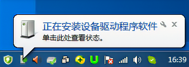
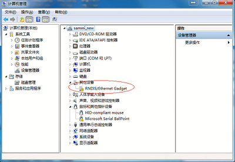
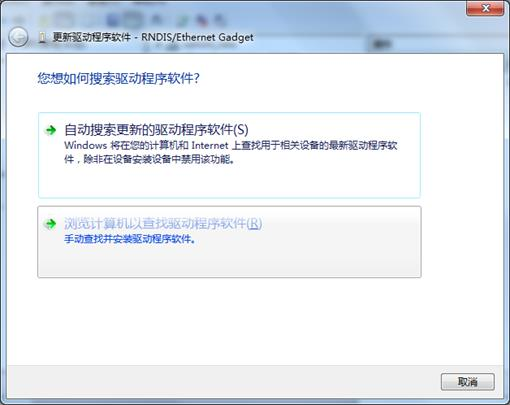
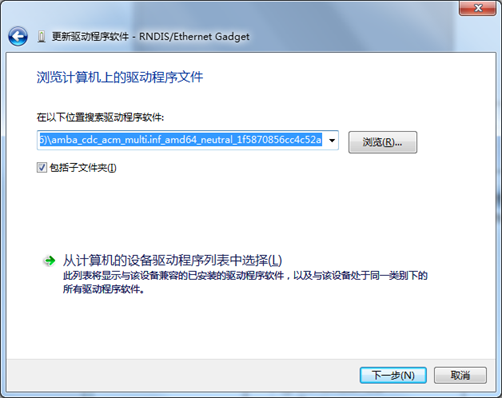
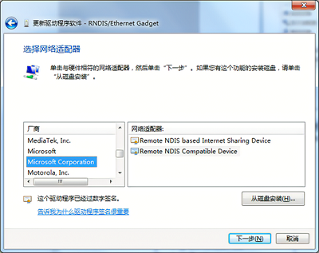
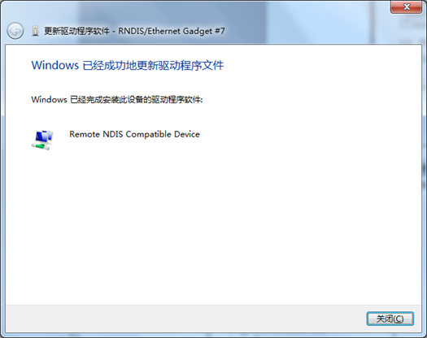
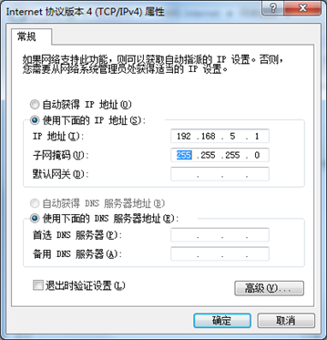
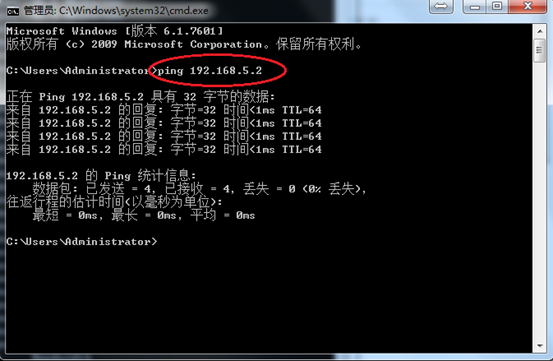

Ghost 系列 USB 网卡（RNDIS) 使用教程
本文为转载网上文章，与任何产品的使用无关，本文仅方便用户快速了解 USB RNDIS 驱动安装的详细过程，故转载了这篇文章：原文链接
简述
本文档主要描述 GHOST 4K 相机如何工作在 USB 网卡模式（符合 RNDIS 规范）如何 PC 端通过 USB 连接相机后与相机 TCP/IP 通讯，并通过 RTSP 或 RTMP 视频通讯协议获取到相机的视频流方法。本方法使用了 RNDIS （Remote Network Driver Interface Specification） 远程网络驱动接口规范， 就是在USB设备上跑 TCP/IP，让相机看上去像一块 PC 的网卡。
RNDIS 是 Windows7 的一部分， 但遗憾的是如果默认安装（插上符合 RNDIS 的设备时）一般均会安装失败，本文档会描述如何重新安装 RNDIS 驱动。
如何 enable GHOST 4K 相机为USB网卡模式
相机固件版本号： v2.0 以上
在相机 SD 卡的根目录下创建文件名为
fmcam.conf的文本文件
查看注意事项
请注意有些系统配置会自动加上 .txt 的扩展名变为 fmcam.conf.txt 请删除 .txt,确保文件名只为 fmcam.conf。
文件内容如下:
usb_net=1
usb_net_host=192.168.5.1
usb_net_ip=192.168.5.2
- 相机进入 USB 网卡模式后，相机 WIFI 指示灯会亮绿灯。
如何在 Windows7 上安装 RNDIS 驱动
- 相机使用如上
mcam.conf脚本文件开机后，插入 USB 并连接到 PC 端，Windows7 会弹出正在安装设备驱动程序软件消息。

注意： 请确保相机先开机，识别到有效的
fmcam.conf脚本文件才会进 USB 网卡模式，如果是关机插入 USB 连接电脑，会进入到 MSC U 盘模式。
Windows 会自动搜索并安装 RNDIS 驱动，不过片刻之后您会发现安装失败。

右键点击桌面计算机图标，选择管理——设备管理，可以看到
RNDIS/Ethernet Gadget设备，并且处于驱动未安装状态。
右键点击
RNDIS/Ethernet Gadget设备，选择更新驱动程序软件，在如何搜索设备软件提示窗口中，选择浏览计算机查找驱动程序软件（R）。选择从设备列表中选择网络适配器。
选择从计算机的设备驱动程序列表中选择(L)。
在硬件设备列表中往下拉，找到网络适配器,选中并下一步。

在网络适配器窗口的制造商列表中选择微软公司（Microsoft Corporation）,右侧列表中选择远端
RNDIS兼容设备（Remote NDIS Compatible Device）
弹出如下警告窗口，请选
YES

点击是并等待安装结束，
RNDIS设备将会安装成功
在控制面板中选择网络和Internet下的查看网络状态和任务：

选择更改适配器设置

可以看到网络连接中多了一个本地连接
（RNDIS/Ethernet Gedget）

设置新增的
USB网卡的IP地址（要求与相机配置文件fmcam.conf指定的usb_net_host的值一致）- 右击本地连接（RNDIS/Ethernet Gadget)

- 选中 Internet 协议版本 4(TCP/IPv4)，点击属性按键，指定
PC网卡的IP地址为:192.168.5.1.

判断
PC与相机是否可以ping通，检测方法如下：从电脑开始里找到运行，然后在运行对话框中输入CMD命令，之后按回车键，进入CMD命令操作界面，如下图：

输入命令符按回车键（或点确认键）后即可进入
CMD命令操作框，然后我们再输入ping命令，输入:ping 192.168.5.2， 其中192.168.5.2是相机脚本文件，fmcam.conf中用户设定的相机IP。

如果能ping通，说明相机与PC端建立TCP/IP连接成功。
PC 端如何获取相机的视频流
设置视频流的分辨率及码率
在相机 SD卡中的配置文件 fmcam.conf 增加两个选项 stream_resolution 和 stream_bitrate 如：
usb_net=1
usb_net_host=192.168.5.1
usb_net_ip=192.168.5.2
stream_resolution=4KUHD
stream_bitrate=25000000
stream_resolution 用于设置相机视频流的分辨率，可以为 4KUHD/1080P/720P/WVGA , 均为 30fps 分别代表如下分辨率：
4KUHD： 3840*2160
1080P： 1920*1080
720P： 1280*720
WVGA： 848*420
stream_bitrate 用于设置相机视频流的码率，其中 1000000 代表 1Mbps, 25000000 代表 25Mbps, 800000 代表 800kbps.
获取 RTSP 视频流
PC 端安装 VLC 播放器，在菜单媒体/打开网络串流中输入 rtsp://192.168.5.2/live，可获得 RTSP 协议的视频流，其中 192.168.5.2 为相机的 IP 地址。

如何 PC 端通过 USB 网卡模式获取多台 GHOST 4K 的视频流
配置相机为
USB网卡模式，并配置为不同的网段：CAM1 的脚本文件
fmcam.conf如下：usb_net=1 usb_net_host=192.168.5.1 usb_net_ip=192.168.5.2 stream_resolution=4KUHD stream_bitrate=25000000CAM2 的脚本文件如下：
usb_net=1 usb_net_host=192.168.6.1 usb_net_ip=192.168.6.2 stream_resolution=4KUHD stream_bitrate=25000000CAM3 的脚本文件如下：
usb_net=1 usb_net_host=192.168.7.1 usb_net_ip=192.168.7.2 stream_resolution=4KUHD stream_bitrate=25000000CAM4 的脚本文件如下：
usb_net=1 usb_net_host=192.168.8.1 usb_net_ip=192.168.8.2 stream_resolution=4KUHD stream_bitrate=25000000当这 4 台相机通过
USB连接PC端后， 会分别提示安装RNDIS/Ethernet Gedget驱动，按上述方法安装驱动成功后，在网络连接中会多 4 个RNDIS/Ethernet Getget网卡，分别设置对应相机的USB网卡地址为如：CAM1 USB 网卡 IP 地址：
192.168.5.1CAM2 USB 网卡 IP 地址：
192.168.6.1CAM3 USB 网卡 IP 地址：
192.168.7.1CAM4 USB 网卡 IP 地址：
192.168.8.1获取多台设备的视频流, 这 4 台设备的
RTSP视频流地址分别为：CAM1 USB 网卡 IP 地址：
rtsp://192.168.5.2/liveCAM2 USB 网卡 IP 地址：
rtsp://192.168.6.2/liveCAM3 USB 网卡 IP 地址：
rtsp://192.168.7.2/liveCAM4 USB 网卡 IP 地址：
rtsp://192.168.8.2/live